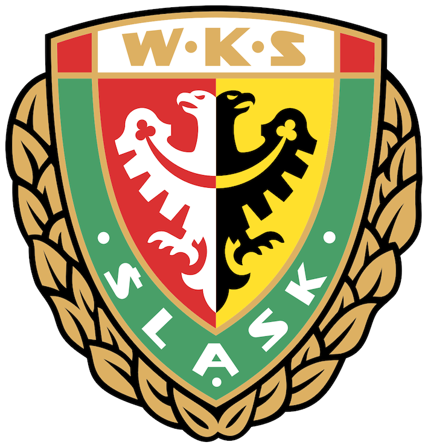
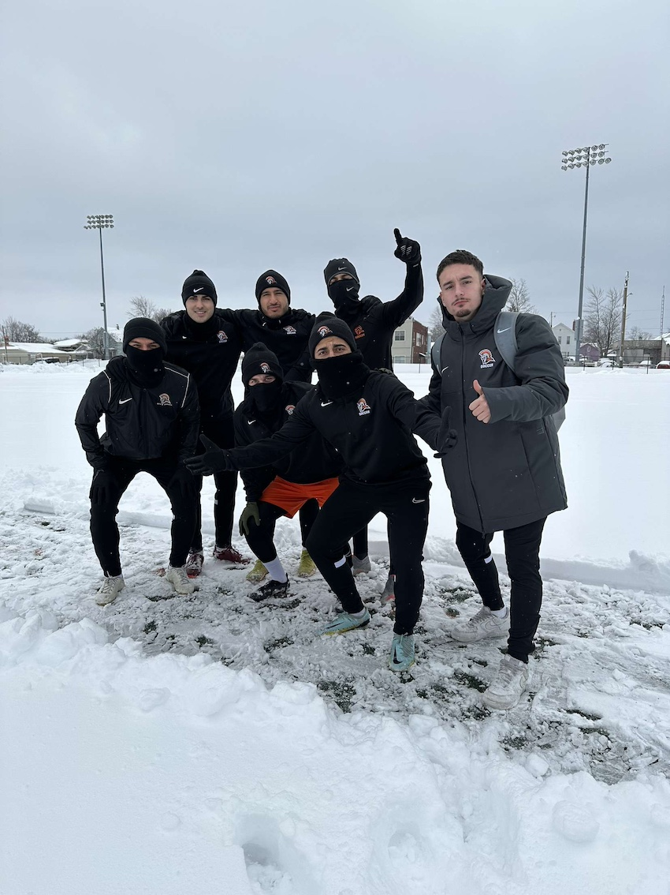
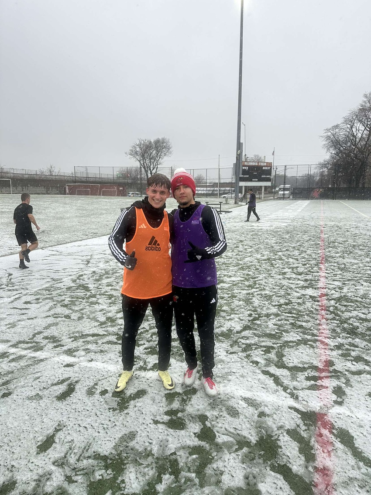

Soccer
Soccer is my biggest passion. My passion for soccer comes from my dad and my older brother. I have played in multiple clubs in multiple countries throughout my life and currently I am a part of the mens soccer team here at IIT. I am also a life long Arsenal supporter.
Soccer Career:
- WKS Slask Wroclaw - This was the first club I was a part of that is worth mentioning. I joined the team in 2013 and stayed there all the way until 2020. Therefore, a large part of my life revolved around this club.
- 
- FC Stade-Lausanne Ouchy - After moving to Switzerland I had to say goodbye to WKS and find myself a new team. After a couple of trials in different clubs, I ended up in FC Stade-Lausanne Ouchy. I faced a couple of challenges, the biggest one being the early language barrier, due to everyone speaking french. However, after some time has passed I was able to form connections with my teammates and excel in my new role.
- Indiana Tech- After moving to the US, I spent my first year in Indiana Tech. I was very lucky to be part of a very successful team. Our biggest achievements that year included winning the WHAC tournament, coming second in the WHAC conference and participating in the opening rounds of the national tournament.
- 
- Illinois Tech - After my freshmen year for several reasons I decided to transfer to Illinois Tech. My first two seasons were unfortunately cut short due to injuries. My biggest personal achievement in my IIT career has been becoming the NACC offensive player of the week earlier this year.
- 